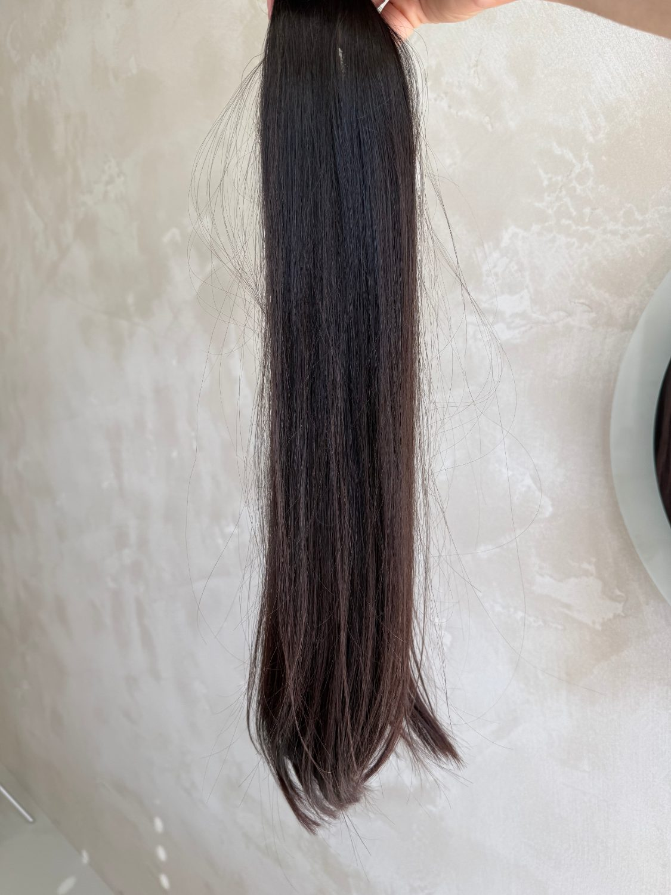
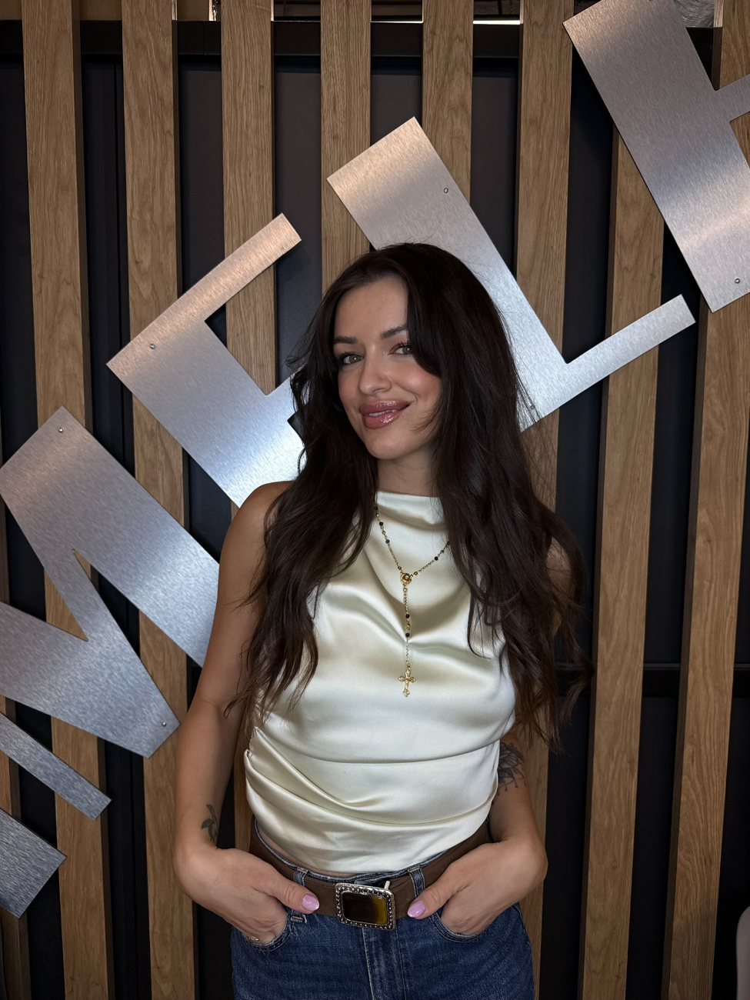

Přirozená struktura
Zachovaná kutikula znamená přirozený lesk, splývavost a dlouhou životnost.
Už přes deset let stavíme na dlouhodobých spolupracích — s klientkami i s kadeřnicemi napříč celou Českou republikou.

Jsme rodinná firma, která si zakládá na kvalitě a spokojenosti zákazníků i partnerů.
Už přes 10 let spolupracujeme dlouhodobě s klientkami i s kadeřnicemi po celé České republice. Rukama nám prošly tisíce culíků a u každého platí totéž — nabízíme jen vlasy, které bychom s klidem nosili sami.
Začínali jsme jako rodinný tým a tímhle přístupem se řídíme dodnes: férová cena podle gramáže a osobní přístup ke každé objednávce.
Neopracované vlasy si zachovávají svou přirozenou strukturu — a právě to dělá rozdíl mezi vlasy, které vydrží, a těmi, které po pár týdnech zklamou.
Zachovaná kutikula znamená přirozený lesk, splývavost a dlouhou životnost.
Každý kus procházíme osobně. Nedodáváme nic, co bychom sami nenosili.
Cenu počítáme podle gramáže kusu — žádné nejasnosti.

Součástí Silki jsou i profesionální kurzy prodlužování vlasů metodou keratin.
Vedou je zkušené lektorky Markéta a Tereza, každá s lety praxe v oboru — naučí vás metodu od základů přes techniku až po finální styling a podnikatelský přístup.